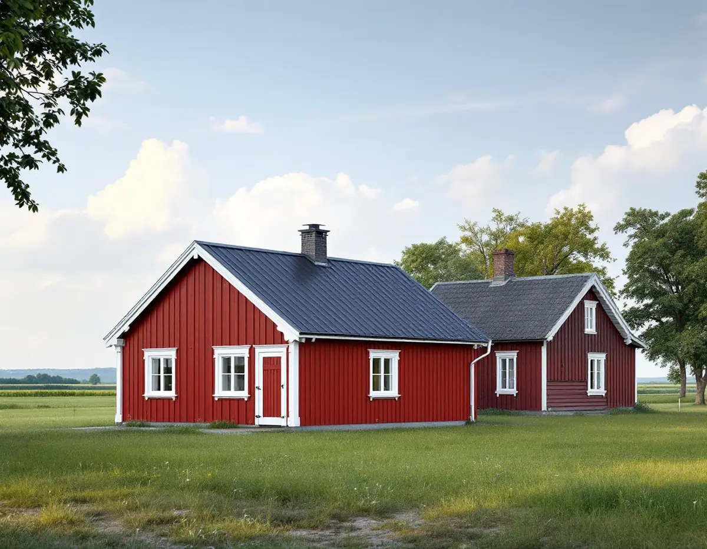
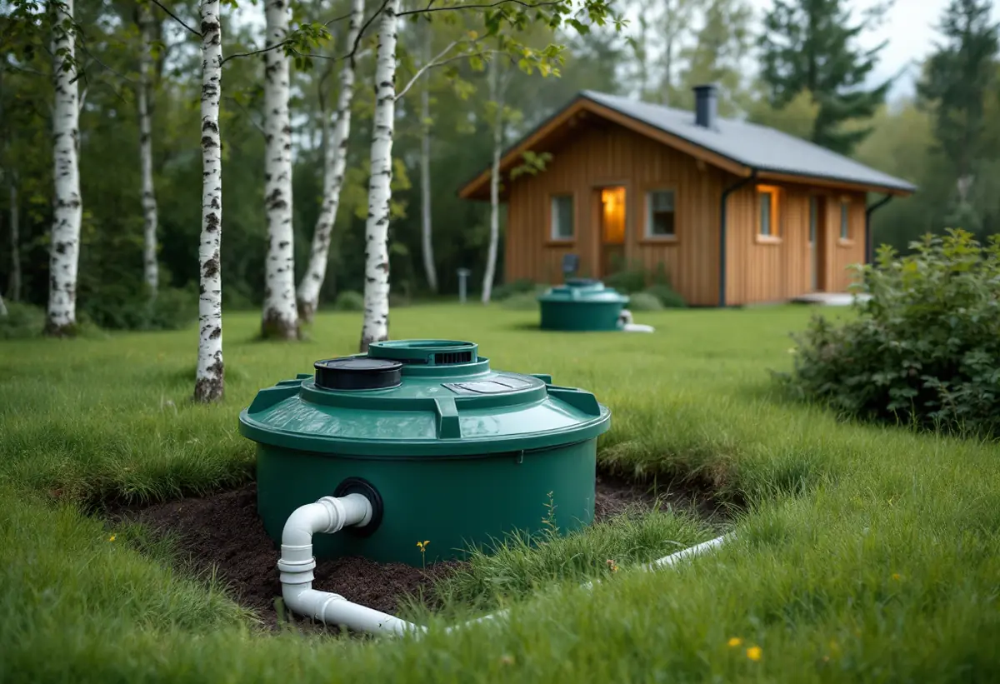

Läget
Detaljplan eller inte, kulturmiljö och strandskydd för just din fastighet.
På Mälaröarna ligger många villor och permanentade fritidshus utan detaljplan, och då blir både huset och reglerna annorlunda än i staden. Geal Entreprenad AB bygger komplementbostadshus nyckelfärdigt och reder ut plan, kulturmiljö, strandskydd och avlopp innan bygget planeras.

Ekerö kulturmiljöprogram från 2015 beskriver ett högt bebyggelsetryck, med nya bostäder och permanentning av fritidshus i snabb takt, och konstaterar att många av nybyggnaderna och förtätningarna sker utanför detaljplanelagt område. För ett attefallshus är det en avgörande fråga. Utanför detaljplan får huset ha upp till 50,0 kvadratmeter byggnadsarea och 4,5 meter till nocken, och alla lovfria komplementbyggnader på tomten får tillsammans vara 65,0 kvadratmeter. Inom detaljplan gäller 30,0, 4,0 och 45,0.
Två villkor gäller oavsett läge: huset ska ha mindre byggnadsarea än bostadshuset det kompletterar, och det ska stå inom tomten. Kommunen skriver att tidigare friggebodar och attefallsåtgärder räknas in i de totala ytorna. Ett tänkt räkneexempel: är bostadshuset på tomten en äldre stuga med 40 kvadratmeter byggnadsarea måste det nya huset vara mindre än 40 kvadratmeter, trots att gränsen utanför detaljplan är 50,0.

Ekerö är enligt kulturmiljöprogrammet den enda kommunen i landet med två världsarv. Stora delar av Adelsö ingår i riksintresset Adelsö–Björkö–Birka, stora delar av Norra Munsö är riksintresse med rundkyrkan och herrgårdsmiljöerna, och Södra Munsö med Kärsö utgör ett herrgårdslandskap av riksintresse. Även herrgårdslandskapet kring Stavsund och östra Helgö pekas ut, och Region Stockholm listar Stenhamra (AB 28) som riksintresse. Enligt programmet gäller områdesbestämmelser med utökad lovplikt kring Munsö kyrka, där bland annat ekonomibyggnader kräver lov.
Kommunen skriver att de nya lovbefrielserna inte kan användas i särskilt värdefulla områden enligt kommunens karta, och inte heller där en detaljplan har skyddsbestämmelser mot föroreningar, olyckor, översvämning eller erosion. Samma karta visar totalförsvarets riksintressen, där kommunen skriver att ett komplementbostadshus inte får byggas lovfritt (9 kap. 36 §). Programmets bilaga om att bygga nytt i gammal bygd betonar skala, gestaltning och noggrann markberedning, och att ett modernt men genomtänkt hus kan passa bättre än ett historiserande. Det tar vi med oss när vi ritar ett hus nära en gård eller ett odlingslandskap.
Ekerö kommun skriver att det generella strandskyddet är 100 meter från strandkanten men på vissa ställen upp till 300 meter, och att det gäller både på land och i vattnet. Miljöbalken förbjuder nya byggnader inom strandskyddsområdet, så ett lovfritt attefallshus vid Mälaren behöver i regel ändå dispens om det hamnar där. Det krävs särskilda skäl, till exempel att platsen redan är ianspråktagen eller väl avskild från stranden av en väg eller bebyggelse.
Till ansökan vill kommunen ha en beskrivning av vad som ska byggas och av de särskilda skälen, en situationsplan, fasad- och planritningar, en beskrivning av växt- och djurlivet och uppgifter om servitut. Därför ritar vi huset färdigt innan ansökan lämnas, så att dispensen gäller just den placering som ska byggas. Om altaner, bryggor och gäststugor i övrigt finns mer under snickare på Ekerö.
Många fastigheter utanför planlagda områden har eget avlopp. Ekerö kommun skriver att ett nytt enskilt avlopp kräver tillstånd och att en ändring av en befintlig anläggning oftast kräver anmälan. Förordningen om miljöfarlig verksamhet är tydlig på en punkt: att ansluta en vattentoalett till en befintlig avloppsanordning kräver tillstånd. Ett attefallshus med toalett som kopplas till villans gamla anläggning hamnar alltså i den kategorin.
Kommunen råder dig att kontakta miljöenheten för rådgivning innan ansökan. Anläggningen för vatten och avlopp anmäls dessutom till byggnadsnämnden enligt plan- och byggförordningen, och arbetet väntar på startbesked. Finns kommunalt vatten och avlopp anmäler du inkopplingen till Roslagsvatten i god tid före byggstart. Mer om måtten och paragraferna finns i nya regler för attefallshus.
Detaljplan eller inte, kulturmiljö och strandskydd för just din fastighet.
Vi räknar ut hur stort huset får bli utifrån villan och potten.
Ny anläggning, ansluten till befintlig eller kommunalt VA.
Dispens, avloppstillstånd och anmälan med ritningar.
Grund, stomme och installationer fram till inflyttning.
Slutgenomgång och de handlingar du behöver spara.
Skatteverket ger inget rotavdrag för att bygga ett helt nytt hus eller en liknande fristående byggnad på tomten, och inte heller för att bygga en helt ny bostad. Ett komplementbostadshus på Ekerö är nybyggnad, även om det står på samma tomt som villan, och därför räknar vi priset för huset utan avdrag.
Storlek upp till 50 kvadratmeter, grund på berg eller lera, avloppslösningen, avståndet till befintliga ledningar och hur material kan transporteras till tomten. Efter ett kostnadsfritt platsbesök får du ett skriftligt kostnadsförslag.
Komplementbostadshus på tomten.
Attefallshus →Takbyte, takbesiktning och plåtarbeten.
Takläggare på Ekerö →Stenhamra, Kungshatt och Adelsö.
Takrenovering på Ekerö →Anmälan, mjukt vatten och eget avlopp.
Badrumsrenovering på Ekerö →Nytt hus, vattenskydd och bergvärme.
Byggföretag på Ekerö →Väder, säsong och torktider på öarna.
Fasadmålning på Ekerö →Egnahem, villaområden och äldre gårdar på Ekerö.
Fasadrenovering på Ekerö →Sommarvillor och 60-talsvillor på Ekerö.
Fönsterbyte på Ekerö →Villor i Stenhamra och omgjorda sommarhus.
Golvläggare på Ekerö →Slipa trägolv som ligger på golvvärme.
Golvslipning på Ekerö →Vedspis, egen brunn och nya sopsorteringen.
Köksrenovering på Ekerö →Sommarvillor, stugor och villor på Mälaröarna.
Målare på Ekerö →Takvatten, solceller och plåttak på Ekerö.
Plåtslagare på Ekerö →Altan, gäststuga och snickeri nära Mälaren.
Snickare på Ekerö →Tapet på timmer, papp och skivor.
Tapetsering på Ekerö →